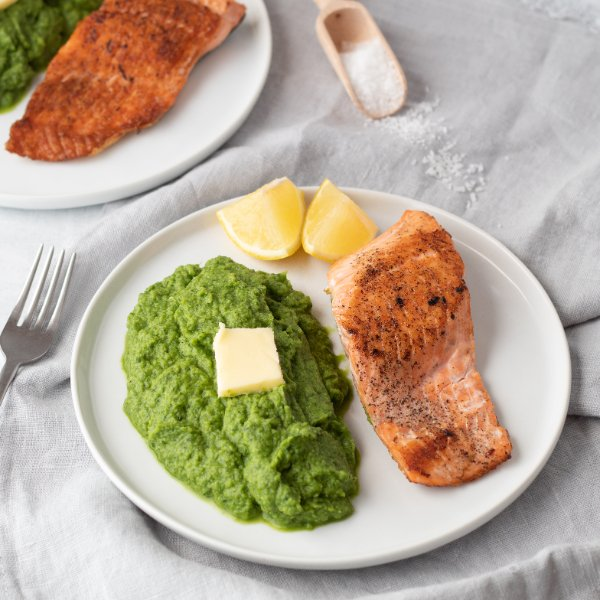

Pan-Fried Salmon with Cauliflower & Spinach Power Mash

Nutrition (per serving)
680.4 kcalCalories
43.2 gProtein
15.1 gCarbs
51.1 gFat
Full nutrition table
| Calories | 680.4 kcal |
| Total fat | 51.1 g |
| Saturated fat | 27.7 g |
| Trans fat | 1.6 g |
| Cholesterol | 194.7 mg |
| Sodium | 196.4 mg |
| Carbohydrates | 15.1 g |
| Fiber | 5.2 g |
| Sugars | 5.5 g |
| Protein | 43.2 g |
| Potassium | 1665.5 mg |
| Calcium | 216.2 mg |
| Iron | 3.9 mg |
| Vitamin A | 677.8 IU |
| Vitamin C | 101.1 mg |
| Vitamin D | 643.7 IU |
Cookware
Ingredients
- 2 (5 oz) pkgsbaby spinach
- 1 medium headcauliflower
- 1 small pkgfresh basil
- 2 clovesgarlic
- 4 fl ozheavy whipping cream
- 1lemon
- 1 ½ lbsalmon fillet
- 1 mediumyellow onion
- black pepper
- butter, unsalted
- salt
Steps
- Fill a medium saucepan about halfway with hot water (from the tap); cover with a lid and bring to a boil over high heat.
- Wash and dry the fresh produce. (Skip the spinach if it came pre-washed.)1 medium head cauliflower
1 small pkg fresh basil
2 (5 oz) pkgs baby spinach
1 lemon - Cut the cauliflower head into quarters, then trim off and discard the leaves and thick stems; roughly cut into bite-sized florets.
- Once the water is boiling, add the cauliflower and cook until fork-tender, about 10 minutes.
- Meanwhile, peel and medium dice the onion.1 medium yellow onion
- Preheat a large skillet over medium-high heat.
- Once the skillet is hot, add butter and swirl to coat the bottom. Add onion and cook, stirring occasionally, until lightly browned, about 5 minutes.2 tbsp butter, unsalted
- Peel and mince garlic.2 cloves garlic
- Add garlic to the skillet with the onion; cook, stirring constantly, 1 minute more. Remove from heat and transfer the garlic and onion to a blender.
- Pick basil leaves off the stems; add leaves to the blender along with cream, butter, salt, and pepper.4 fl oz (½ cup) heavy cream
¼ cup butter, unsalted
1 tsp salt
½ tsp black pepper - Place the spinach in a large colander in the sink. When the cauliflower is cooked, carefully empty into the colander to drain; add cauliflower and wilted spinach to blender. Blend on high, until smooth, about 1 minute. Set aside. Blend in batches if necessary.
- Pat salmon dry with paper towels and cut into fillets; season with salt and pepper.1 ½ lb salmon fillet
½ tsp salt
⅛ tsp black pepper - Wipe out skillet and return to heat; add more butter and swirl to coat the bottom.2 tbsp butter, unsalted
- Add salmon to the skillet, skin-side down, and reduce heat to medium. Cook 4 minutes and then flip, cooking an additional 3-4 minutes, until the fish is firm and cooked through.
- Cut lemon into wedges.
- To serve, divide spinach mash between plates and top with butter; place salmon on the side and garnish with lemon wedges. Enjoy!2 tbsp butter, unsalted